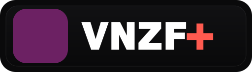

En direct
CHYZ 94.3 FM
Radio etudiante de l'Universite Laval
Pret a jouer
Lecture en cours
CHYZ 94.3 FM en direct
Source publique Icecast, lecture continue en arriere-plan lorsqu'elle est prise en charge par le navigateur.